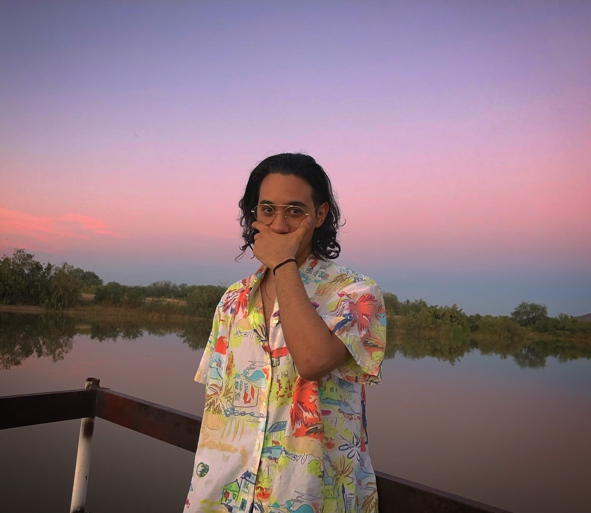

Manuel Domínguez
Creative / Frontend Developer
¡Hola! Soy Manuel y estoy buscando iniciar una carrera en tecnología. Hice esta página para compartir mi experiencia como desarrollador y crear un espacio para el resto de mis proyectos.
¡Gracias por visitar mi página y no dudes en contactarme!
Proyectos
A continuación algunos proyectos en los que he sido parte:

Callejón Diagonal
Participé en la realización de un e-commerce fictio. Escribí el código de tres secciones (Contacto, Delivery y Acerca de Nosotros) además de ser el encargador de escoger la tipografía y la paleta de colores, redactar el wording de productos y textos, cambiar el diseño UX/UI para una mejor experiencia y haber dado la idea original del proyecto.
Ver proyecto Ver códigoMappack
Fundador del prototipo de una aplicación que empezó como proyecto escolar y que formó parte de los 10 mejores startups en el país de acuerdo a los jueces de Desafío Intel 2014. La semifinal nacional se realizó en Guadalajara con una presentación en inglés en el Centro de Sofware - Sala WITSA ante diversas personalidades del sector tecnológico y potenciales inversionistas.
Ver proyectoExperiencia Laboral
Google Search Quality Rater
Telus
Abril 2017 - Julio 2021
Calificar los resultados de búsqueda y data como outsourcing para Google.
Entre mis actividades estaban:
- Un acercamiento cualitativo y detallado de contenido
- Incrementar el SEO usando queries de usuarios en mi localidad
- Evaluar UX (Experiencia del usuario) usando SERPs (Search Engine Results Pages) que era uno de los mayores intereses del cliente
Agente Bilingüe
Teleperformance
Julio 2014 - Enero 2015
Asesoramiento legal a clientes norteamericanos de DirectTV
Entre mis actividades estaban:
- Revisión exhaustiva en contratos con la compañía de televisión satelital
- Atención al cliente
Educación
Universidad de Hermosillo
Licenciatura en Producción y Programación Musical
2015 - 2019
- Graduado con honores
- Presidente del Club Estudiantil 2019
- Becado por parte del gobierno del Estado a partir del segundo año
- Maestro voluntario en un orfanato local